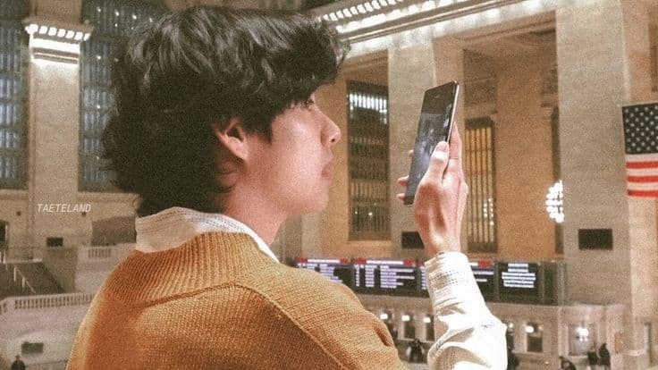
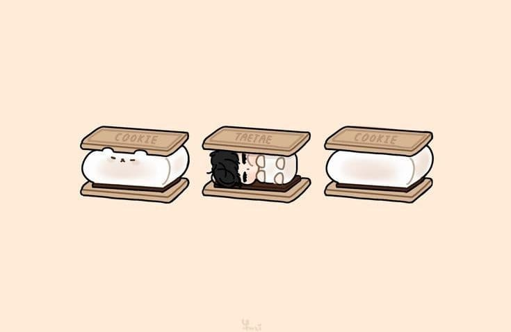
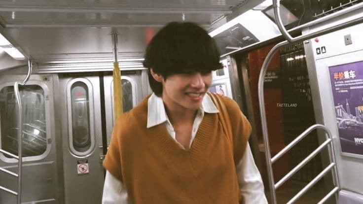
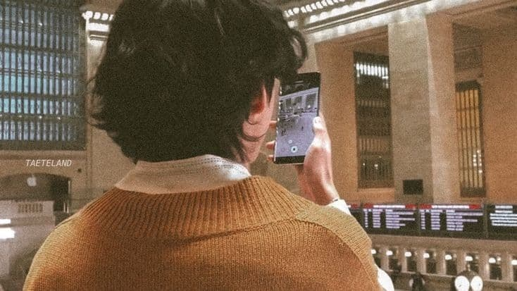

Who is this Kim Tehyung?
i found it quite difficult to nail this analysis down - this is the only member i actually had to plan before writing. taehyung has a personality that kind of confuses me because he is everything all at once. he is such a big character that i dont think i could possibly understand him wholly; and understanding is what i do best. i think what makes taehyung so big is his lust for life. he is curious and he doesn’t hold back. he has no qualms when it comes to judgement. taehyung is dynamic. he is so entertaining to watch and thats what makes him so popular. people want a taste of the zest he has, they want that to be as bright as him. but they cant, because taehyung will always be the star of the show and he doesn’t even try. he will always be one step ahead of everyone as they try to catch up but he isn’t a conformist, he is a trendsetter. he does things that arent mainstream and his singularity will bring copycats. thats just the type of person taehyung is.
i dont think thats the only reason why taehyung is popular amongst idols or why he has so many friends, i think he also has a knack for communication. it is natural to him which makes him seem more charismatic and his energy will ultimately empower those around him. taehyung has so many big ideas because his mind is always whirring and because he has his own language, inadvertently persuades whoever he is with. he has the power to inspire who he is with just with his words. taehyung also brings out the best in people and i think the fact that he is humble is why he is likeable.
taehyungs mind never stops and is always filled with thoughts and dreams and this curious nature brings him to be fascinated by small things. this fascination is why taehyung is so observant and why he seems to just watch over sometimes, eyes glazed over. he is so lost in his own thoughts that he has left his body to live in hise mind. but this endless stream of thoughts could be considered both a strength and a flaw. a strength; taehyung knows himself and his thoughts like the back of his hand, he is interested in things and this curiosity is his drive to try new things. a weakness; taehyung is highly emotional and is very in touch with his own emotions so being in his own head could lead to negative thoughts and create unnecessary insecurities.
taehyung has a need for independence, he doesn’t like when he has to rely on someone. you see this when he brings up hold me tight, of course, he is proud. but i think he is just reminding others that that is his own work. his. independently. he likes when he has credit and when people acknowledge this. taehyung feels as though rules are restraint and would much prefer to be set free. he likes to be seen as independent, he wants to be seen as someone that can do things for himself. but, unfortunately, taehyung has assigned himself to the kpop industry where independence is a desire that wont be attained. this would stress taehyung out and i can see that taehyung would possibly be sad in his position if it weren’t for his other members.
i think that taehyung really does look up to jin as an older brother and has a great amount of respect for him and ive noticed that he always laughs at jins jokes!!! a+ concept!!! yoongi and taehyung are a fun pair to analyse because they are so different; yoongi values realism and taehyung values optimism. they both see the world in juxtaposing ways and thats why i think that they would be a good pair since i believe that opposites do attract. hoseok and taehyung are strange because as much as i love their interactions, they both seem too intense for each other.
Thanks for reading!
Kim Taehyung pics Telegram Instagram You Tube